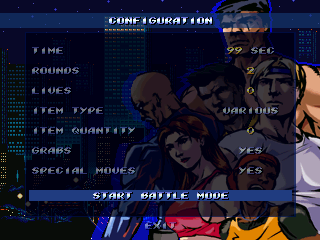

CONFIGURATION
Configuration menu for the extra modes (not available in some of them).

TIME: 25, 50, 75 or 99
ROUNDS: 1, 2 or 3
LIVES: Number of lives for each round (0 ... 9)
CONFIGURACIÓN
Menú de configuración de los modos extra (no disponible en todos).
TIEMPO: 25, 50, 75 o 99
RONDAS: 1, 2 o 3
VIDAS: Número de vidas para cada ronda (0 ... 9)
13